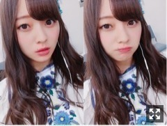
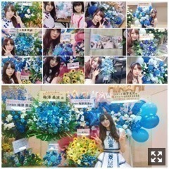
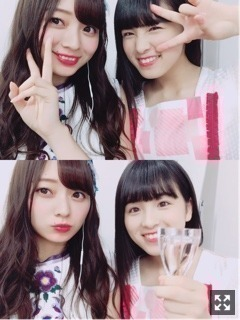
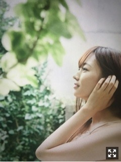
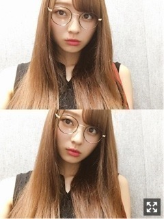

好きなものは好き。梅澤美波
みなさまこんにちは！！
乃木坂46 ３期生の
梅澤美波です！！

髪色だいぶ暗くしましたー！！
ビックリするほど暗い！見慣れない！
髪色でだいぶ印象変わるのね
どうかなあ？( .. )
ちょっと暗くしすぎたかなって思ったけど
とても嬉しい☺︎☺︎
色落ちするまで暗いの楽しみます( ¨̮ )
最近はね〜
れなさんとかき氷食べに行ったり
かえでとかき氷食べに行ったり(好きすぎか
りりあとちょっくらお買い物したり
中々楽しい日々を送っているよ☺︎
みんな頑張ってる〜？？( .. )
あとね最近赤いバック買ったのー！
本当に黒をめちゃくちゃ着るし
全身黒！って日が多いから
ポイントになるものが欲しくてね( ¨̮ )
めちゃくちゃお気に入りなの☺︎
欲しい服もたくさんだし
コスメも欲しいのたくさんだし
もう欲しいものだらけでどうしよう( ¨̮ )
秋服も出てきたり
早く秋になって欲しさが増している◎
色んな雑誌読んでどのお洋服買おうかな〜どのコスメ買おうかな〜って考えてる時が幸せ☺︎
本日、近畿会場の大阪にて
高校生クイズの応援サポーターとして参加してきました！
高校生の皆様だけの前で何かをするってゆうのが初めてだったから
すごく緊張したけどわくわくしてた☺︎
みんなめちゃくちゃ元気だったな〜
応援しに行ったけど、なんだか私までパワーもらってしまった、ありがとう( .. )
ゴー☆ジャスさんもすごく優しい方で
一緒にいてくださって安心しました(；＿；)
予選通過したみんな、本当におめでとう！
本戦も頑張ってください☺︎☺︎
残念ながらダメだったよって方も、
今日は本当にお疲れ様でした、楽しんでいただけたかな☺︎
高校生っていいね、
なんかほんのちょっとだけ戻りたくなった◎
去年は見てる立場だったのに
今年は乃木坂46の一員で応援サポーターって
なんだかすごいなあ、ありがたいです。
また数日後に大阪戻ってきます〜たのしみ☺︎
そしてそして
名古屋京都握手会
ありがとうございました！！
衣装だと気持ちが引き締まるし
なんだか新鮮でとても楽しかった☺︎☺︎
この衣装着たかった〜ってのが多くて
とても幸せだったの( .. )
▽７／１６ 京都
１部：ブランコ衣装(ゆうりさん)
２部：シーグラ青Ver.(新内さん)
▽７／１７ 名古屋
４部：サヨナラの意味歌唱衣装(白石さん)
５部：インフルエンサー(衛藤さん)
▽７／２３ 幕張メッセ
１部：はださま(白石さん)
２部：サヨナラの意味MV衣装(能條さん)
先輩方の衣装お借りしました( .. )
衣装どの方のか聞く方が非常に多かったので書いておきます◎
先輩の衣装はいるんだ〜
って何人かの方に言われたけど
ちゃんと入るよ(´･ ･`)（笑）

可愛いお花たちもありがとう☺︎☺︎
ごめんめちゃくちゃ見にくくて(；＿；)
いつもレーンに行くとニヤニヤしちゃう
幸せです、ありがとう
アルバム個握、
二日間連続の京都名古屋があったのもあるし
３回しかないのもあるけど
あっとゆう間だったなあ、
たのしかったよ、皆様本当にありがとう☺︎
ここから１ヶ月ちょっと握手会ないのかあ
１８th握手会は９月からだもんね( .. )
SHOWROOMさんでも言ったけど
握手会本当に好きだから寂しいなあ
こう思えるのも皆様のおかげなんだけど。☺︎
コメントとかアルバム個握で言われた
浴衣も９月のどっかできるから
お楽しみに☺︎
ハロウィンのコスプレもちゃんと考えてるよ〜できるだけ当日まで何着るかは秘密にするつもり〜( ¨̮ )
１２月はサンタももちろん着ますよ〜
握手会っていいね、普段着れないの着られるし☺︎☺︎
次会えるまで、みんな頑張ってね( .. )
あ、レーンから出てく時
仕切りにぶつかってく方が多くて
あわあわしててとても可愛かったよ☺︎（笑）
気をつけてね( ¨̮ )
コメントたくさん、
本当にありがとうございます。☺︎
皆様の気持ちが分かって
すごく嬉しく思っています、
皆様良い方すぎて、私の強い味方だなあ、
皆様がいればのびのびアイドル活動できるなあ
っていつも思ってる☺︎
人生一度きりだから好きなことしな
って両親は押し出してくれたけど
こんな素敵な方に応援してもらえる立場になって、たくさん素敵な景色がみれて、色んなお仕事ができて、ここにこれて本当に幸せ☺︎
毎日が新鮮で
新しいことに向き合って
色んな方と出逢って
毎日が充実してる、毎日をすこしのこらず記録する頭がほしい。☺︎
毎日に無我夢中です、
私が自分のことで嬉しい！って思うことがあったら、それを皆様も一緒に喜んでくれるの、なんだか本当に不思議で本当に嬉しい
人の嬉しいを共有するのって素敵すぎるよね。◎
出逢ってくれてありがとうみんな〜

リクエスト多数の梅桃です◎
なかなか会えてなかったけど最近しょっちゅう会えているよ〜！
選抜発表されたときは寂しかったけど桃子は桃子でした、相変わらずです◎
写真撮る前リップぬってなかったももっぴは私のポーチからリップを取り出し塗っていました、相変わらずです◎
私の香水を持って遊ぶももっぴ、相変わらずです◎
いつでも自由人なももっぴ、相変わらずです◎
なんだか安心した〜
今日の梅桃も、元気ですよ〜( ¨̮ )
質問コーナー！！(前回のコメント含む
Q.大変な時どうやって頑張ってる？
A.ひたすら追い込む（笑）答えになってないか、、（笑）音楽に助けてもらう！すごくパワーがある！歌を聴くと頑張れたりする！あとはそれを終えた時に楽しみを作っておいて目標にして頑張る！絶対自分のためになるんだろうな〜ってことだったら絶対に頑張れるはず☺︎一緒にがんばろな( ¨̮ )
Q.青空、朝焼け、夕焼け、星空、満月、一番見上げるのはどれ？
A.圧倒的に星空かなあ〜。夜がとにかく好きなの。色々考えたい時は大好きな音楽を聴きながら１人でお散歩してる。星が光るのって不思議だよね、（笑）１人って寂しく悲しくなるけど好きな時間だったりする。夜空は写真に映らないからその日だけ見れるってとこも好き☺︎
女の子☺︎
Q.スキンケアで心がけてることは？
A.ん〜なんだろう、、メイク落として顔洗ったらすぐスキンケアすること！当たり前だけど乾燥しちゃうからね( .. )あとはコットン３種類使ってます！（笑）拭き取りローション用、化粧水用、乳液用！あと美顔器は毎日してます〜あとはチーマー！それくらいかな？？( .. )
SHOWROOMさんで
お悩み相談室的なのやろうかなって思ってる( ¨̮ )
ゆるっとね☺︎
告知◎
〜誌面
▽ ７／７ BOMB さま
れのとペアグラビア
▽ ７／２０ ヤングジャンプ さま
ソログラビア
▽ ７／２４ B.L.T. さま
いおりさんちはるさんとグラビア
発売中です〜皆様見てくださったかな☺︎☺︎
感想ぜひ教えて欲しい( .. )
▽ ７／ ２９ 月刊エンタメさま
新内さんとペアグラビア
ーーーー
▽ ７／２２ のびのび乃木坂３期生！！
あののびのび乃木坂が４年ぶりに返ってきました！！私達３期生でやらせていただきます！！なんと！初回に登場しました！山下向井阪口梅澤の４人です！見てくれたかな〜？( .. )
最っ高に楽しかった撮影でした、、ここ最近で１番笑ったんじゃないかってくらい笑いました☺︎☺︎
撮影終わって４人で油そば食べいったの☺︎みんな並食べたけど足りない足りないずっと言ってた( ¨̮ )大食いだな〜、向井山下阪口面白すぎて最高にだいすき( .. )
▽ ７／３０ ３期生単独公演@大阪
もうすぐだよ〜お楽しみに☺︎
▽ ８／６ TIF ３期生
最終日、HOT STAGEにてトリを務めさせていただきます。
たくさんのアイドルさんの中のトリ。
本当に嬉しいですし、期待以上のものをお届けできるよう頑張りたいと思います！
▽８／１１．１２．１３ 全ツ@宮城
全国ツアー皆様楽しみにしててね〜がんばります！
また早く言いたいお知らせができたの☺︎
早く言いたいの☺︎
楽しみに待ってて☺︎
ちょっと先になるかも( .. )
ヤングジャンプさま皆様見てくれましたか？
ソログラビア、本当にありがたい(；＿；)
元々毎号買ってる！ってゆう方が多くて
その雑誌に私が出られるのってなんだか物凄く嬉しく思いました( .. )
撮影本当に楽しかったんだよ〜
また呼んでもらえるようにがんばる☺︎☺︎
今をがんばるのみでございます
先のことももちろん見ます
けど、まだ今は目の前のこと

きっとうまくいくよね。☺︎
(ヤングジャンプさまオフショット
明日は山下の誕生日だよ〜！
最近山下ほっとけないの〜！
ただそれだけ☺︎
あ、
今度でんとりりあとみづきとカラオケ行く約束しました、あと映画第2弾も( ¨̮ )
そしたらまた報告しますね〜
載せたい写真が山ほどあるの、
けど１２回に１回だとなかなか載せられないから少しずつ載せるね☺︎

お出かけした時の梅澤(髪染める直前
じゃあばいばい〜
次はTIFの日だよ、６日☺︎☺︎
自分が成長すればきっと何か変わるんじゃないかなって思うの、簡単なことではないのは分かってるんだけどね
全てが上手くいくとは思ってないし、自分のこともそれなりに理解はしている、全部分かってる、私は私の場所がきっとある
我慢するのが大切なときもある、それがやっぱり必要みたい
さあみんな〜お仕事学校がんばろな〜
Original：https://www.nogizaka46.com/s/n46/diary/detail/39983?ima=0524&cd=MEMBER